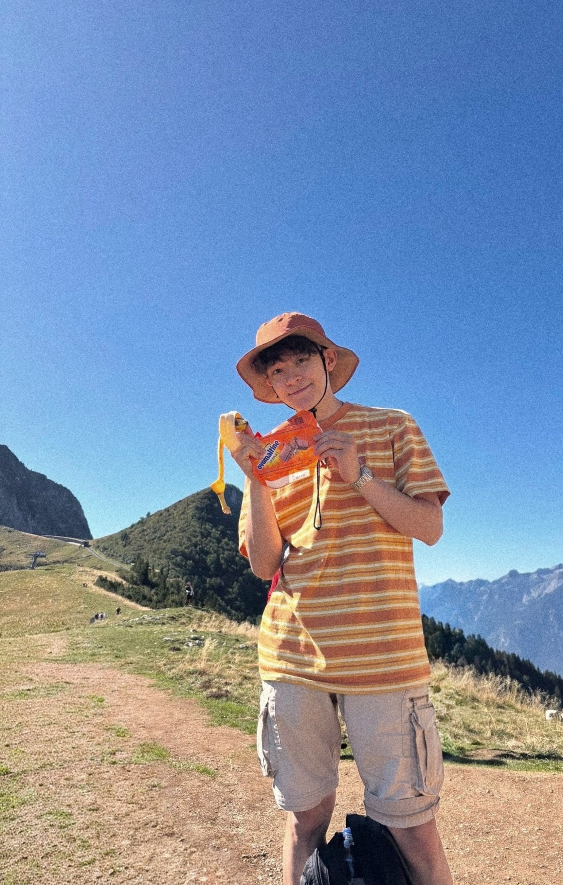

Eric Holzer
Web Developer and Designer
 Drawn by my illustrator brother!
Drawn by my illustrator brother!
About me
I'm Eric Holzer, also known as erzloh. I'm a 24-year-old Swiss-Japanese Fullstack Web Developer passionate about beautiful and intentional design both technically and visually.
I studied Computer Science at École 42, where I learned among others, C, C++, web technologies, networking, DevOps, along with teamwork and communication, but most of all, problem-solving and learning how to learn anything.
Alongside coding, I'm a Music Composer. I've written original pieces for brands, animations, games, etc, as well as personal projects like piano works and lo-fi albums.
Furthermore, I'm passionate about languages. I'm a native French speaker, fluent in English, and continuously and earnestly improving my Japanese. I'm somewhat alright in German, though I'd definitely love to take some time to brush it up!
I also run a YouTube channel and an Instagram account where I share things I'm interested in and where I document my learning journey.
At the heart of my work and life lie minimalism, beauty, and intentionality.
Technical skills
Bio
- 2026Completed a 3-month Swiss civilian service at Unisanté, as a Web Developer and UI/UX Designer
- 2026Finished my Computer Science studies at École 42
- 2025Transferred to 42 Tokyo for a year, studying advanced Computer Science
- 2024Started a 7-month internship at Audemars Piguet, as a Full-Stack Web & Mobile Developer
- 2023Started a 6-month internship at NaravenGames, as an Unreal Engine developer (20% part-time)
- 2022Began studying Computer Science at Ecole 42, Lausanne
- 2022Completed the Sound Arts PreCollege at the University of the Arts Bern
- 2002Born in Lausanne, Switzerland
Things I
making music, programming, swimming, cycling, bouldering, graphic design, learning japanese, cooking, playing the piano, filmmaking, traveling, minimalism, photography, and a lot more!...
Links

What's a better combo than a hike and Ovomaltine chocolate ～(■_■)～♪